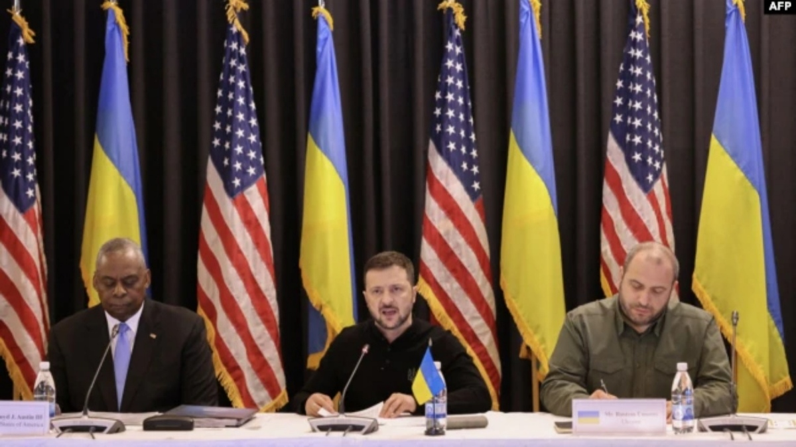

中国时间 6:47 2024年9月7日 星期六
乌克兰总统弗拉基米尔·泽连斯基(Volodymyr Zelenskyy)星期五(9月6日)在德国举行的军事盟友会议上表示，乌克兰需要远程能力来打击俄罗斯领土的纵深，“这样俄罗斯才有动力寻求和平”。
“我们需要让俄罗斯城市，甚至俄罗斯士兵思考他们需要什么：和平还是普京，”泽连斯基对乌克兰防务联络小组的成员说，该小组是一个美国领导的联盟，由50多个国家组成，负责协调对乌克兰的军事支持。
这是乌克兰总统首次前往德国拉姆施泰因空军基地会见该组织成员。
泽连斯基指出，美国的政策没有改变，不允许乌克兰使用美国提供的武器向俄罗斯领土深处的目标开火。白宫担心此举可能使美国卷入与俄罗斯直接冲突。
当被记者问及泽连斯基请求美国允许乌克兰使用美国提供的武器攻击俄罗斯领土深处的目标时，美国国防部长劳埃德·奥斯汀(Lloyd Austin)表示，在这场战争中，没有单一的能力会起决定性作用。
“乌克兰拥有相当强大的能力来应对远超陆军战术导弹系统射程，甚至风暴影巡航导弹射程的目标，”他说。其中提到的导弹系统由美国、英国和法国提供。
他说，他认为俄罗斯和乌克兰之间的冲突最终将“在谈判桌上解决，但时间很难预测”。
“我们将继续努力，在未来的某一天到来时，让乌克兰处于最佳态势，”他说。
然而，加拿大国防部长比尔·布莱尔(Bill Blair)等其他盟友星期五表示，联盟应该支持他所说的泽连斯基“非常合理”的要求，即使用更多手段打击俄罗斯境内的更多远程目标。他补充说，乌克兰已保证他们将根据国际法使用这些武器。
最近几周，乌克兰遭到一波又一波的无人机和导弹袭击。泽连斯基表示，乌克兰显然需要额外的防空系统。他感谢该组织提供的系统，但表示有大量的防空装备虽已承诺但尚未交付。
“世界有足够的防空系统来确保俄罗斯的恐怖主义不会得逞，”他说。“我希望你们更积极地与我们一起开展防空工作。”
德国国防部长鲍里斯·皮斯托里乌斯(Boris Pistorius)星期五告诉记者，他对7月北约峰会上承诺向乌克兰提供的爱国者导弹防御系统的缓慢交付时间感到“失望”。
“到目前为止，它们还没有到达基辅，他们确实迫切需要它们，尤其是在冬天，”他说。
奥斯汀宣布了美国对乌克兰一项价值2.5亿美元的的新军事援助计划，其中包括为海马斯高机动性多管火箭系统提供更多弹药和装甲运兵车。在星期五的乌克兰国防联络小组会议开幕式上，奥斯汀表示，盟友将继续帮助乌克兰“抵御当前俄罗斯的侵略--威慑未来俄罗斯的侵略”。然而，他说，为了长期安全，乌克兰必须继续增加自己的国防生产。
与此同时，北约秘书长延斯·斯托尔滕贝格(Jens Stoltenberg)星期五在挪威举行的新闻发布会上发表讲话，敦促基辅的盟友向乌克兰提供更多军事支持，这与泽连斯基的信息相呼应，即一个强大的乌克兰是结束战争的最快途径。
俄罗斯“总统弗拉基米尔·普京必须意识到，他无法在战场上获胜，必须接受公正和持久的和平，接受乌克兰作为一个主权和独立的国家获胜，”这位北约领导人说。“我呼吁所有盟国继续提供重要支持，尤其是在战争的这个困难阶段。”